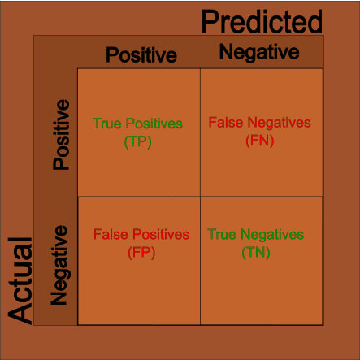
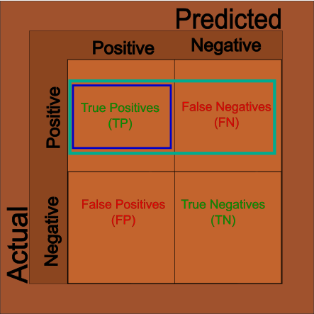
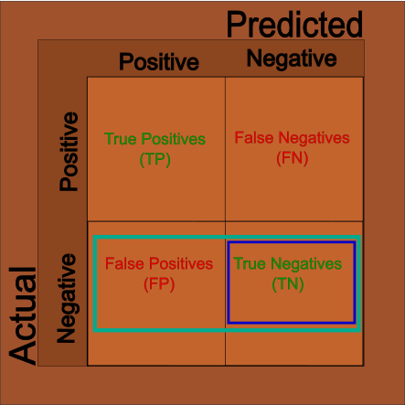

Measuring Beyond Just Correct
Working with many of these Machine Learning Algorithms can sometimes lead to false sense of confidence. Using them has become very easy with software packages so it’s important to step back sometimes and think about how to go beyond simply fitting the model. Commonly, the metric Accuracy is used to measure the success of our models and while we may have an intuitive understanding of what Accuracy means we should have a Mathematical understanding. When we do this, we will find out that there are other metrics around Accuracy which are - in some cases - even more important than Accuracy.
So, Accuracy is…?
We will get there but before discussing it, I would like to step back into the past even further. We are going to discuss Contingency Tables since they are very often overlooked in all this. We have become so accustom to using these that we have ceased to think about them. But, a Contingency Table - or Crosstab as the R function prefers - is a table of frequencies for the observed features. With respect to Machine Learning, our observed features are what was predicted vs what was true. But, these are not limited to to these in any way. They can be any sort of observations such as hair color or categories of human temper. This is what was done with the Fisher’s Test and Pearson Chi-Squared in my previous posts. We needed to convert our observations into a Contingency Table for the functions to successfully interpret them.
Back to Accuracy
So, Accuracy is mathematically calculated as: \[
Acc = \frac{(TP + TN)}{(P_a + N_a)}
\] … where:
- \(TP\) means True Positives
- \(TF\) means True Negatives
- \(P_a\) means All Positives
- \(N_a\) means All Negatives
… which is our true predictions over the total amount of observations. This information is often displayed in the Cross Tab discussed above; you may know this often called a Confusion Matrix:

This is also the correct time to discuss Type I and Type II errors. When a prediction is incorrect, these fall into to possibilities: 1. Prediction was true but reality was false. 2. Prediction was false but reality was true. We call the first case Type I errors. We call the second case Type II errors.
And, now that we have this then we can build out other metrics.
Sensitivity
When looking at our results, knowing the accuracy is often not enough. Sometimes we’ll want to know how accurate just the positive cases are as sometimes we care more about how often the positive cases are correctly identified. We can use the pieces from the Matrix above to get what we want: \[ Sensitivity = \frac{TP}{TP + FN} \] 
Specificity
And, sometimes we’ll want to know how accurate just our negative cases are. And, like above, we can use the matrix to filter out the negative cases: \[ Specificity = \frac{TN}{TN + FP} \]

Conclusions
There are plenty of other metircs of these kind on the wikipedia page but these are the most likely to be seen. In fact, this post is mostly a review for my own sake. I often mix these too up due to their similar names. Hopefully, I remember them this time.